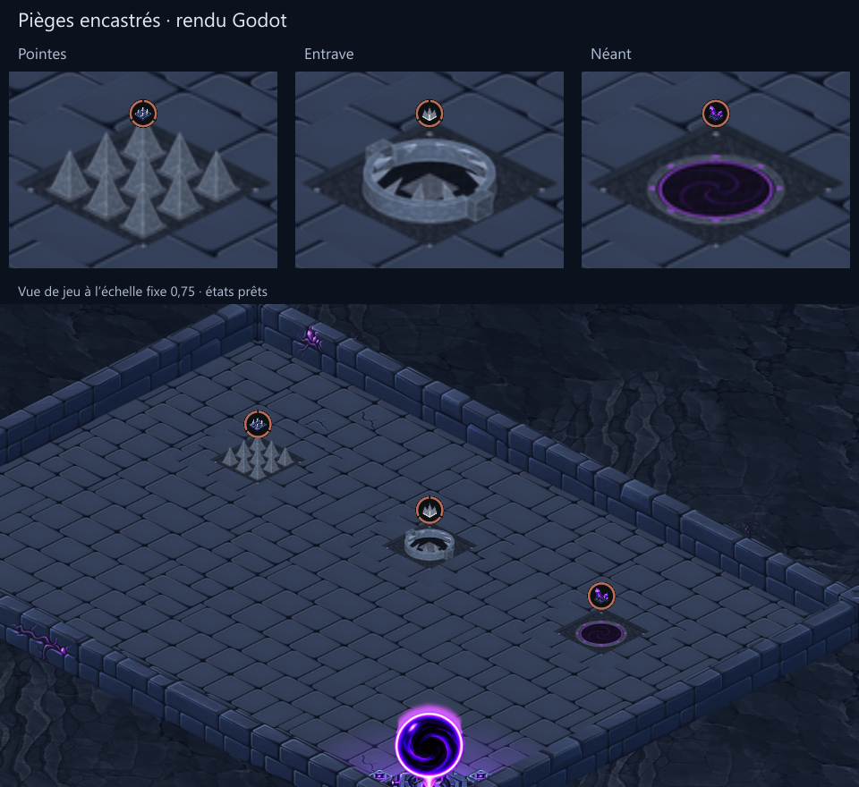
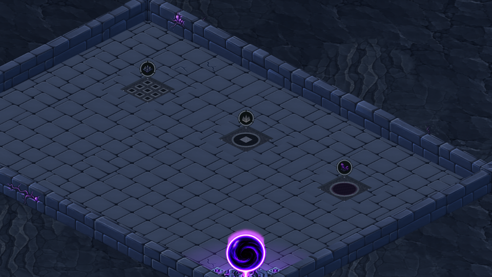

Wireframe validé, mise en texture intégrée. Captures natives Godot, sans modification de l’interface ni des règles. Métal préparé à partir d’une matière ImageGen et de la géométrie commune.


Vérifications : huit situations statiques, deux atlas précédents et 136 régions inchangés ; nouveau feuillet 512 × 512, 106 068 octets PNG, 1 Mio RGBA. Pas de validation sur téléphone ni de raid complet. L’apparence reste soumise au retour utilisateur.
Prompt et provenance ImageGen · Contrôles d’export · Contrôles Godot